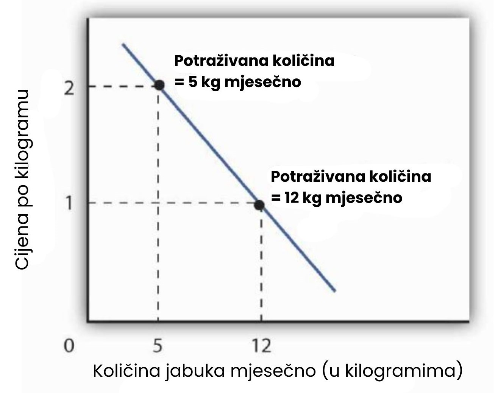
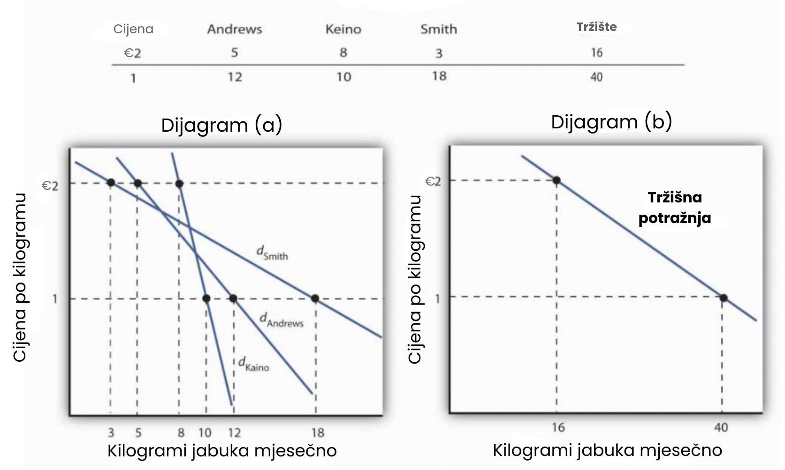
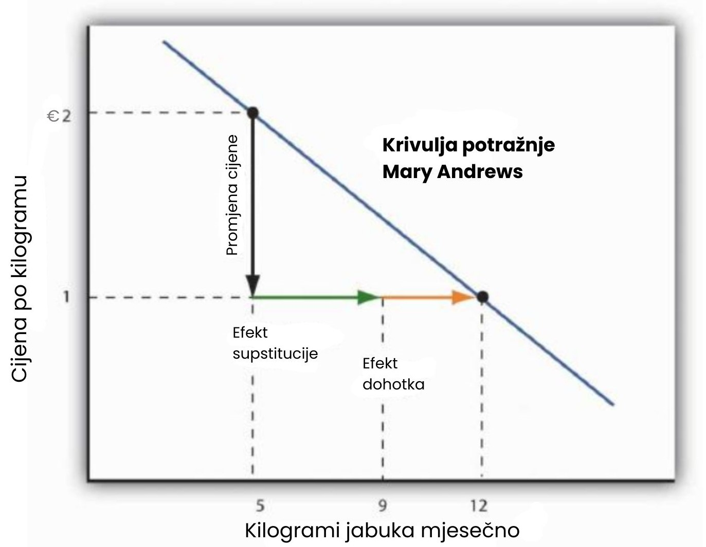
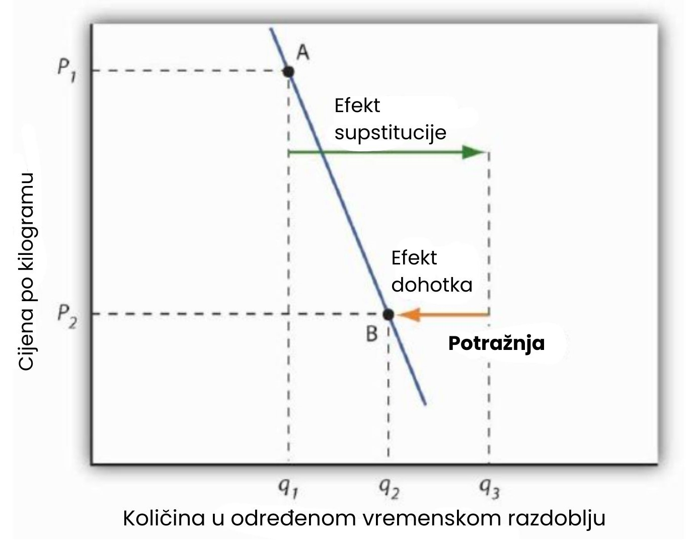

Maksimizacija korisnosti i potražnje
Izbori koji maksimiziraju korisnost, odnosno, izbori koji slijede pravilo granične odluke općenito dovode do krivulja potražnje koje padaju prema dolje. Ovaj odjeljak prikazuje kako izbori pojedinca koji maksimiziraju korisnost mogu dovesti do krivulje potražnje.
Izvođenje individualne krivulje potražnje
Pretpostavimo, radi jednostavnosti, da neka Mary Andrews konzumira samo jabuke (označene slovom A) i naranče (označene slovom O). Jabuke koštaju 2 eura po kilogramu, a naranče 1 euro po kilogramu, i njezin mjesečni budžet za ta dva dobra iznosi 20 eura. Pretpostavljamo da će prilagoditi svoju potrošnju tako da vrijedi uvjet za maksimizaciju korisnosti za ta dva dobra: omjer granične korisnosti i cijene jednak je za jabuke i naranče. To jest:
Ovdje su MUA i MUO granične korisnosti jabuka i naranči. Njezina potrošnja iznosi njezin budžet od 20 eura mjesečno; pretpostavimo da kupuje 5 kilograma jabuka i 10 kilograma naranči.
Sada pretpostavimo da je zbog iznimno bogate žetve cijena jabuka pala na 1 euro po kilogramu. Niža cijena jabuka povećava graničnu korisnost za svaki 1 euro koji gđa Andrews potroši na jabuke, tako da pri njezinoj trenutnoj razini potrošnje jabuka i naranči
Gđa Andrews će reagirati tako što će kupovati više jabuka. Kako to bude činila, granična korisnost koju dobiva od jabuka će se smanjivati. Ako jabuke i naranče smatra zamjenjivima (supstitutima), kupovat će i manje naranči. To će uzrokovati porast granične korisnosti naranči. Nastavit će prilagođavati svoju potrošnju sve dok granična korisnost po potrošenom euru ne bude jednaka za oba dobra:
Pretpostavimo da u novom rješenju kupuje 12 kilograma jabuka i 8 kilograma naranči. Još uvijek troši cijeli svoj budžet od 20 eura na ta dva dobra [(12 x 1€) + (8 x 1€) = 20€].
Krivulja potražnje za jabukama Mary Andrews, d, može se izvesti određivanjem količina jabuka koje će kupovati pri svakoj cijeni. Te se količine određuju primjenom pravila granične odluke u cilju maksimizacije korisnosti.
Pri cijeni od 2 eura po kilogramu, gđa Andrews maksimizira korisnost kupujući 5 kilograma jabuka mjesečno. Kada cijena jabuka padne na 1 euro po kilogramu, količina jabuka pri kojoj maksimizira korisnost raste na 12 kilograma mjesečno.
Upravo se potrošačevom reakcijom na različite cijene gradi njegova krivulja potražnje za nekim dobrom. Kada su jabuke koštale 2 eura po kilogramu, Mary je maksimizirala korisnost kupnjom 5 kilograma jabuka. Kad je cijena jabuka pala, povećala je kupljenu količinu na 12 kilograma.
❗Primijetite da u ovom primjeru gđa Andrews maksimizira korisnost ne samo tamo gdje su omjeri graničnih korisnosti i cijena jednaki, već i tamo gdje su same granične korisnosti oba dobra jednake. Međutim, jednakost graničnih korisnosti vrijedi samo zato što su cijene oba dobra jednake – oba dobra ovdje koštaju 1 euro. Da su cijene jabuka i naranči različite, granične korisnosti pri rješenju koje maksimizira korisnost bile bi različite. Uvjet za maksimizaciju korisnosti – konzumirati gdje su omjeri granične korisnosti i cijene jednaki – vrijedi uvijek, bez obzira na cijene. Dakle, potrošači ne maksimiziraju korisnost izjednačavanjem graničnih korisnosti, već izjednačavanjem omjera granične korisnosti i cijene.
Uvjet maksimizacije korisnosti glasi:
Uvjet maksimizacije nije:
Od individualne do tržišne potražnje
Tržišne krivulje potražnje koje smo proučavali u prethodnim poglavljima izvedene su iz individualnih krivulja potražnje. Pretpostavimo da se, osim gđe Andrews, na tržištu jabuka nalaze još dvoje potrošača – Ellen Smith i Koy Keino. Količine koje svaki od njih konzumira pri različitim cijenama prikazane su na slici u nastavku, zajedno s količinama koje konzumira gđa Andrews. Krivulje potražnje za svakog pojedinog potrošača prikazane su u dijagramu (a). Tržišna krivulja potražnje za sve troje potrošača, prikazana u dijagramu (b), dobiva se zbrajanjem količina potražnje pri svakoj cijeni za sve troje potrošača. Na primjer, pri cijeni od 2 eura po kilogramu, gđa Andrews traži 5 kilograma jabuka mjesečno, gđa Smith 3 kilograma, a g. Keino 8 kilograma. Ukupno se na toj cijeni traži 16 kilograma jabuka mjesečno. Zbrajanjem individualnih količina potražnje pri cijeni od 1 euro po kilogramu dolazimo do tržišne potražnje od 40 kilograma mjesečno. Ova metoda zbrajanja količina po vodoravnoj osi grafa naziva se vodoravno zbrajanje. Tržišna krivulja potražnje je dakle vodoravna suma svih individualnih krivulja potražnje.
Tablica prikazuje rasporede potražnje za Mary Andrews, Ellen Smith i Koya Keina. Njihove individualne krivulje potražnje prikazane su u dijagramu (a). Tržišna krivulja potražnje za sve troje prikazana je u dijagramu (b).
Individualne krivulje potražnje odražavaju prilagodbu potrošača u cilju maksimizacije korisnosti pri različitim tržišnim cijenama. Još jednom vidimo da, kako cijena pada, potrošači teže kupovati više nekog dobra. Krivulje potražnje imaju negativan nagib, što potvrđuje zakon potražnje.
Efekti supstitucije i dohotka
Vidjeli smo da je Mary Andrews povećala količinu jabuka koje traži kada je cijena jabuka pala s 2 na 1 euro po kilogramu. Iza te prilagodbe kriju se dva različita učinka: supstitucije i efekt dohotka. Važno je razlikovati ova dva učinka jer mogu imati vrlo različite implikacije na elastičnost krivulje potražnje.
Prvo, smanjenje cijene jabuka učinilo ih je jeftinijima u odnosu na naranče. Prije promjene cijene, za istu svotu moglo se kupiti 2 kilograma naranči ili 1 kilogram jabuka. Nakon promjene cijene, za istu svotu mogao se kupiti 1 kilogram bilo jabuka ili naranči. Drugim riječima, prije promjene cijene 2 kilograma naranči mijenjale su se za 1 kilogram jabuka, dok se nakon promjene 1 kilograma naranči mijenjala za 1 kilogram jabuka.
Drugo, smanjenje cijene jabuka u suštini je potrošače jabuka učinilo "bogatijima". Prije promjene cijene, gđa Andrews je kupovala 5 kilograma jabuka i 10 kilograma naranči po ukupnoj cijeni od 20 eura. Po novoj nižoj cijeni jabuka, mogla bi kupiti istu kombinaciju za 15 eura. Učinak smanjenja cijene jabuka jednak je kao da joj je netko dao 5 eura, time se povećava njezina kupovna moć. Kupovna moć odnosi se na količinu dobara i usluga koju je moguće kupiti s određenim proračunom.
Kako bi razlikovali efekt supstitucije i efekt dohotka, ekonomisti prvo promatraju utjecaj promjene cijene bez promjene mogućnosti potrošača da kupi dobra i usluge. Promjena cijene uz kompenzaciju dohotka zamišljena je vježba u kojoj pretpostavljamo da se, kada se promijeni cijena nekog dobra, potrošačev dohodak prilagođava tako da može kupiti istu kombinaciju dobara kao i prije, ali po novim cijenama. Gđa Andrews je prije promjene kupovala 5 kilograma jabuka i 10 kilograma naranči. Ta kombinacija bi nakon promjene cijene koštala 15 eura. Dakle, za kompenzaciju, uzeli bismo joj 5 eura kako bi joj ostalo točno 15 eura, koliko je potrebno za istu kombinaciju.
S tih 15 eura i jeftinijim jabukama, gđa Andrews bi mogla kupiti 5 kilograma jabuka i 10 kilograma naranči. No, bi li to i učinila? Odgovor ovisi o usporedbi granične korisnosti koju dobiva za dodatni euro potrošen na jabuke i onu za naranče. Dodatna korisnost po euru od jabuka sada premašuje onu od naranči, pa će povećati konzumaciju jabuka. Ako joj je proračun samo 15 eura, povećanje potrošnje jabuka znači smanjenje potrošnje naranči. Dakle, kao odgovor na promjenu cijene uz kompenzaciju dohotka, gđa Andrews supstituira jabuke za naranče. Ova promjena u potrošnji zbog takve promjene cijene naziva se efekt supstitucije.
Pretpostavimo da bi gđa Andrews, pri cijeni jabuka od 1 euro uz kompenzaciju dohotka, povećala potrošnju jabuka na 9 kilograma mjesečno, a smanjila potrošnju naranči na 6 kilograma mjesečno. Efekt supstitucije u tom slučaju je povećanje potrošnje jabuka za 4 kilograma mjesečno.
Efekt supstitucije uvijek dovodi do promjene potrošnje u suprotnom smjeru od promjene cijene. Kada potrošač maksimizira korisnost, omjer granične korisnosti i cijene jednak je za sva dobra. Promjena cijene uz kompenzaciju povećava dodatnu korisnost po dolaru za dobro čija je cijena pala, potrošač će ga kupovati više. Ako cijena raste, dodatna korisnost po dolaru pada – potrošač ga kupuje manje.
Drugim riječima, kada cijena dobra pada, ljudi reagiraju tako da zamjenjuju druga dobra tim dobrom – kupuju više tog dobra, a manje ostalih. Kada cijena raste, događa se suprotno. Promatrajući ponašanje potrošača pod uvjetima kompenzirane promjene cijene, promatramo samo učinak promjene relativnih cijena, bez utjecaja promjene kupovne moći.
Kako bismo dovršili analizu učinka promjene cijene, moramo razmotriti i onih 5 eura koje je gđa Andrews efektivno "zaradila" tom promjenom. Nakon pada cijene, ista kombinacija dobara košta ju 15 eura umjesto 20, kao da ima 5 eura više. Taj dodatni dohodak može također utjecati na količinu jabuka koju konzumira. Promjena u potrošnji zbog implicitne promjene dohotka koja nastaje kao posljedica promjene cijene naziva se efekt dohotka.
Kada cijena dobra raste, događa se implicitno smanjenje dohotka. Kada cijena dobra pada, dolazi do implicitnog povećanja. Kad je cijena jabuka pala, gđa Andrews (koja je konzumirala 5 kilograma mjesečno) efektivno je dobila 5 eura više.
Pretpostavimo da gđa Andrews koristi taj implicitni dobitak da kupi još 3 kilograma jabuka i 2 kilograma naranči mjesečno. Već je povećala potrošnju jabuka na 9 kilograma mjesečno zbog efekta supstitucije, pa dodatna 3 kilograma znače ukupno 12 kilograma mjesečno. To je upravo ono što smo prethodno promatrali kad smo izvodili njezinu krivulju potražnje. Sada vidimo da se povećanje tražene količine sastoji od efekta supstitucije i efekta dohotka. Sljedeća slika prikazuje kombinirane učinke promjene cijene.
Na slici je prikazana krivulja potražnje za gospođu Andrews. Ona pokazuje da smanjenje cijene jabuka s 2 eura na 1 euro po kilogramu povećava količinu koju gospođa Andrews traži s 5 kilograma na 12. Ovaj graf prikazuje da se ta promjena sastoji od učinka supstitucije i učinka dohotka. Učinak supstitucije povećava traženu količinu za 4 kilograma, a učinak dohotka za 3, što ukupno daje povećanje tražene količine za 7 kilograma.
Veličina učinka supstitucije ovisi o brzini kojom se granične korisnosti dobara mijenjaju kako potrošač prilagođava potrošnju uslijed promjene cijene. Kako gospođa Andrews kupuje više jabuka, a manje naranči, granična korisnost jabuka opada, dok granična korisnost naranči raste. Ako male promjene u potrošenim količinama izazivaju velike promjene u graničnim korisnostima, učinak supstitucije potreban za ponovno uspostavljanje jednakosti omjera granične korisnosti i cijene bit će mali. Ako su potrebne mnogo veće promjene u količinama da bi se postigle iste promjene u graničnim korisnostima, učinak supstitucije bit će velik.
Veličina učinka dohotka uslijed promjene cijene ovisi o tome koliko je potražnja za dobrom osjetljiva na promjenu dohotka i koliko je to dobro značajno u budžetu potrošača. Kada se cijena promijeni za dobro koje čini značajan dio potrošačkog budžeta, promjena u potrošačevoj kupovnoj moći je velika. Promjena cijene dobra koje čini neznatan dio budžeta potrošača, međutim, ima mali utjecaj na njegovu ili njezinu kupovnu moć; učinak dohotka takve promjene cijene je mali.
Budući da odgovor svakog potrošača na promjenu cijene ovisi o veličinama učinaka supstitucije i dohotka, ti učinci igraju ulogu u određivanju cjenovne elastičnosti potražnje. Sve ostale stvari nepromijenjene, što je učinak supstitucije veći, to je veća apsolutna vrijednost cjenovne elastičnosti potražnje. Kada učinak dohotka djeluje u istom smjeru kao i učinak supstitucije, veći učinak dohotka također doprinosi većoj cjenovnoj elastičnosti potražnje. Ipak, postoje slučajevi kada se učinci supstitucije i dohotka kreću u suprotnim smjerovima. O tim ćemo slučajevima govoriti u sljedećem odjeljku.
Normalna i inferiorna dobra
Priroda učinka dohotka uslijed promjene cijene ovisi o tome je li dobro normalno ili inferiorno. Učinak dohotka pojačava učinak supstitucije u slučaju normalnih dobara; djeluje u suprotnom smjeru kod inferiornih dobara.
Normalna dobra
Normalno dobro je ono čija potrošnja raste s porastom dohotka. Kada cijena normalnog dobra padne, javljaju se dva prepoznatljiva učinka:
- Učinak supstitucije pridonosi povećanju tražene količine jer potrošači zamjenjuju više tog dobra drugim dobrima.
- Učinak dohotka: Smanjenje cijene povećava potrošačevu sposobnost kupnje dobara. Budući da je riječ o normalnom dobru, to povećanje kupovne moći dodatno povećava traženu količinu tog dobra.
U slučaju normalnog dobra, dakle, učinci supstitucije i dohotka međusobno se pojačavaju. Odgovor gospođe Andrews na sniženje cijene jabuka tipičan je primjer reakcije na nižu cijenu normalnog dobra.
Povećanje cijene normalnog dobra djeluje na sličan način, ali u suprotnom smjeru. Viša cijena uzrokuje da potrošači više konzumiraju druga dobra, čije su cijene sada relativno niže. Učinak supstitucije tako smanjuje traženu količinu. Viša cijena također smanjuje kupovnu moć, pa potrošači smanjuju potrošnju tog dobra i putem učinka dohotka.
Inferiorna dobra
U poglavlju koje je uvodilo model ponude i potražnje, vidjeli smo da je inferiorno dobro ono za koje potražnja opada kada dohodak raste. To je obično dobro koje ljudi zapravo ne vole previše. Kada su im prihodi niski, ljudi konzumiraju inferiorno dobro jer si bolje ne mogu priuštiti. Kako im prihodi rastu i mogu si priuštiti nešto što više vole, konzumiraju manje inferiornog dobra.
Kada cijena inferiornog dobra padne, događaju se dvije stvari:
- Potrošači će zamijeniti druga dobra s više inferiornog dobra jer je njegova cijena u odnosu na druga dobra pala. Količina potražnje se povećava kao rezultat učinka supstitucije.
- Niža cijena efektivno čini potrošače "bogatijima". No, budući da je riječ o inferiornom dobru, to smanjuje količinu potražnje.
Stoga je slučaj inferiornih dobara prilično drugačiji od slučaja normalnih dobara. Učinak dohotka zbog promjene cijene djeluje u suprotnom smjeru od učinka supstitucije kod inferiornih dobara, dok kod normalnih dobara učinak dohotka pojačava učinak supstitucije.
U slučaju inferiornih dobara, učinci supstitucije i dohotka djeluju jedan protiv drugoga. Potrošač započinje u točki A, konzumirajući q1 jedinica dobra po cijeni P1. Kada cijena padne na P2, potrošač se pomiče u točku B, povećavajući količinu potražnje na q2. Učinak supstitucije povećava potražnju na qs, ali učinak dohotka je smanjuje s qs na q2.
Slika prikazuje učinke supstitucije i dohotka kod sniženja cijene inferiornog dobra. Kada cijena padne s P1 na P2, količina koju potrošač traži povećava se s q1 na q2. Učinak supstitucije povećava količinu potražnje s q1 na qs. No, učinak dohotka smanjuje količinu potražnje s qs na q2; učinak supstitucije je snažniji od učinka dohotka.
Rezultat je u skladu sa zakonom potražnje: smanjenje cijene povećava količinu potražnje. Međutim, količina potražnje manja je nego što bi bila da se radi o normalnom dobru. Zbog toga inferiorna dobra obično imaju manje elastičnu potražnju u odnosu na normalna dobra.
Sažetak
- Individualne krivulje potražnje odražavaju prilagodbu potrošača promjenama cijena s ciljem maksimizacije korisnosti.
- Tržišne krivulje potražnje dobivaju se horizontalnim zbrajanjem krivulja potražnje svih potrošača na tržištu.
- Učinak supstitucije zbog promjene cijene mijenja potrošnju u smjeru suprotnom od promjene cijene.
- Učinak dohotka zbog promjene cijene pojačava učinak supstitucije ako je dobro normalno; djeluje u suprotnom smjeru ako je dobro inferiorno.